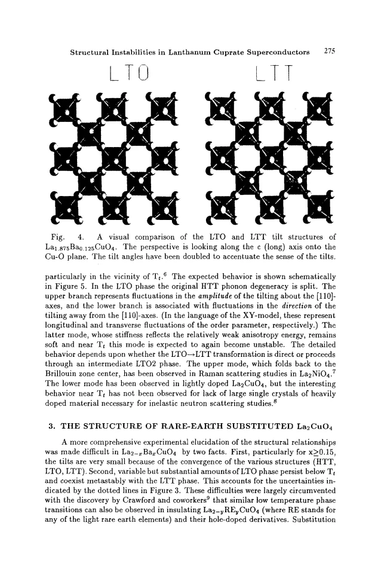
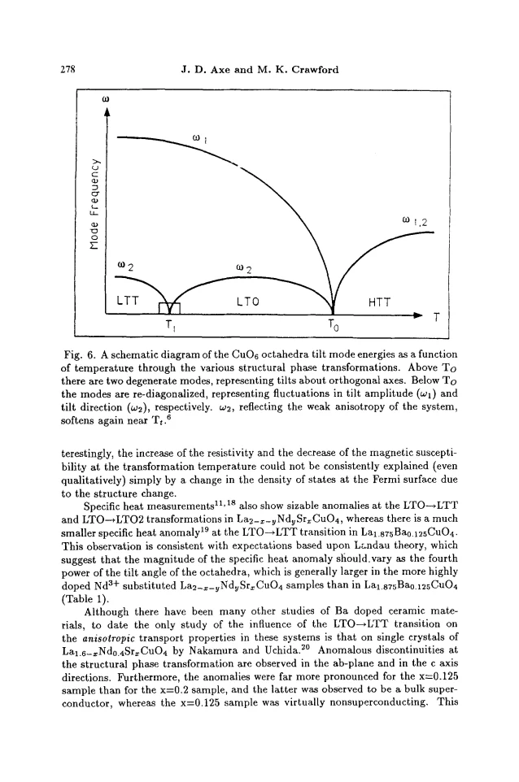
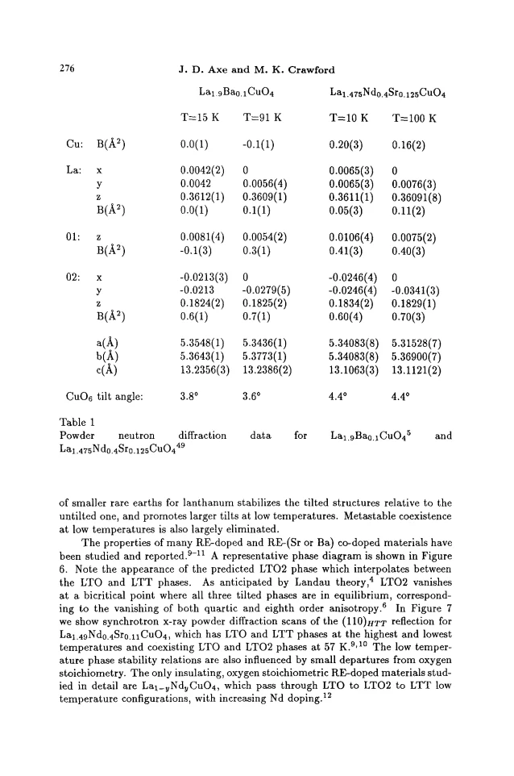

review · Axe · supplied source 1994
Structural Instabilities in Lanthanum Cuprate Superconductors
The review organizes the distinct tilt symmetries and their experimental consequences while emphasizing that the microscopic origin of Tc suppression remained unresolved in 1994.
The question: Which structural variables change at the LTO–LTT transformation, and what do they tell us about superconductivity?
Before you start: the few terms you need
- soft phonon: a low-energy collective displacement near a structural instability
- tilt amplitude versus direction: independent coordinates of the octahedral pattern
- Dzyaloshinsky–Moriya interaction: symmetry-dependent antisymmetric spin exchange
See → explain → test
Understand it in four pictures.
Picture 1 / 4
Decode four structural states
Look for: Follow the mode components rather than only the unit-cell shape.
Swipe across the picture to read every label, or enlarge it below.
- HTT: no tilt
- LTO: diagonal axis
- LTLO: intermediate axis
- LTT: bond axis
Teaching classification referenced to HTT Cu–O axes, not a mandatory four-stage sequence for every sample.
HTT is untilted; LTO, LTLO and LTT are different tilted patterns.
Check the original: PDF p. 2 · PDF p. 3 · PDF p. 4 · PDF p. 5 · PDF p. 6
Picture 2 / 4
Distinguish direction and magnitude
Look for: Compare the projected LTO and LTT tilt patterns.
Swipe across the picture to read every label, or enlarge it below.
- LTO diagonal tilt axis
- LTT bond-axis tilt
Projected teaching axes; LTT direction alternates in neighboring layers and is not shown as untilted.
A large symmetry change can occur with little change in total tilt amplitude.
Picture 3 / 4
Two phonon branches ask different questions
Look for: Separate amplitude fluctuations from directional fluctuations.
Swipe across the picture to read every label, or enlarge it below.
- Amplitude mode
- Direction mode
The original Fig. 6 is itself a schematic; not every predicted feature had been measured.
The directional mode can remain soft because the orientational anisotropy is weak.
Picture 4 / 4
Use independent controls before claiming cause
Look for: Connect rare-earth substitution, pressure and multiple response probes.
Swipe across the picture to read every label, or enlarge it below.
- Structure tuned and measured
- Tc/transport/spin responses change
- Microscopic explanation unresolved
Historical review through 1994; later direct stripe evidence is not part of this source.
Structural correlations constrain superconducting explanations without selecting a unique microscopic mechanism.
Check the original: PDF p. 6 · PDF p. 7 · PDF p. 8 · PDF p. 9 · PDF p. 10 · PDF p. 11 · PDF p. 12
Predict before revealing
Orthorhombic strain vanishes while tilt superlattice intensity remains. What does that allow?
Choose an answer, then compare the reasoning.
Strain measures the component imbalance, while superlattice intensity can remain when both tilt components are equal.
Read the answer
A tilted tetragonal LTT pattern Strain measures the component imbalance, while superlattice intensity can remain when both tilt components are equal.
Go deeper Follow the full argument
The structure is more than a lattice label
Axe and Crawford review structural instabilities in lanthanum cuprates at a time when the one-eighth superconducting anomaly was established but direct electronic stripe-order evidence had not yet supplied the later picture. Their framework begins with corner-sharing CuO₆ octahedra in layered La₂CuO₄. The HTT archetype is untilted. LTO tilts around a diagonal of the original Cu–O square lattice, while LTT chooses a bond-axis direction and alternates that direction between adjacent layers. A less-orthorhombic Pccn phase, also called LTO2 or LTLO, can lie between them. LTT is a coherent combination of structural mode components, not merely an incoherent mixture of orthorhombic twins. These definitions are the foundation for comparing diffraction, phonons, strain and superconductivity.
PDF p. 1 · PDF p. 2 · PDF p. 3 · PDF p. 4 · PDF p. 5 · PDF p. 6
Amplitude, orientation and experimental assignment
Two tilt-mode coordinates separate the size of the structural displacement from its direction. LTO has one nonzero component, LTT has equal component magnitudes, and the intermediate phase has two unequal components. Superlattice intensity scales approximately with tilt amplitude squared, whereas orthorhombic strain tracks component imbalance. Consequently strain can collapse at a lower transition even when tilting remains substantial. The review highlights a practical problem in LBCO: toward higher Ba content the tilts become small, structural energies converge, and metastable LTO can coexist with LTT. Diffraction broadening then complicates assignment of a single lower-symmetry phase. Rare-earth substitution provides a clearer structural control because smaller ions stabilize tilting while Sr can independently set the nominal hole concentration.
What the soft modes mean
In the HTT phase, equivalent tilt directions have degenerate soft vibrations. Condensing one direction into LTO splits the fluctuations into an amplitude branch and a directional branch. The amplitude branch changes how much the octahedra tilt, while the directional branch rotates the established tilt toward another orientation. The latter remains soft when angular anisotropy is weak and can soften again toward an LTT or intermediate transition. The review's mode-frequency diagram is explicitly a schematic of this expected behavior. Some phonon branches and precursor softening were observed, but the decisive behavior in heavily doped compositions was limited by the lack of large suitable single crystals. Do not convert this illustrative curve into a claimed measured phonon dispersion or universal transition trajectory.
Electronic responses do not identify one mechanism
Structural transitions coincide with anomalies in resistivity, magnetic susceptibility, thermopower and specific heat, but the responses do not all support a simple density-of-states explanation. The review notes that simultaneous resistivity growth and susceptibility reduction cannot be consistently explained solely by a changed Fermi-level density of states. Heat-capacity anomalies are larger in more strongly tilted rare-earth-substituted samples, consistent with a Landau scaling argument involving the fourth power of the tilt. Structure also changes allowed antisymmetric exchange and spin anisotropy, affecting spin orientation and interlayer coupling. This does not mean the dominant isotropic exchange changes in the same way. Each observable constrains a different physical ingredient, so their concurrence is evidence of coupling rather than a unique explanation of superconducting suppression.
The historical superconducting conclusion
Comparisons at approximately fixed holes suggest that less favorable tilt structures can lower Tc, with an additional strong one-eighth anomaly. Both LTO and LTT can nevertheless support superconductivity, so the suggested hierarchy is a comparative tendency rather than an absolute prohibition. Pressure often lowers structural transition scales and raises Tc, but persistent suppression near one eighth and incomplete structural information limit simple causal claims. The review evaluates band-structure and spin-related proposals critically, including sensitivity of calculations to assumed tilt magnitudes and unresolved differences between LTO and LTT. Its closing questions are useful precisely because they remain open in this source. Later stripe and phase-coherence work adds evidence, but should be identified as later work instead of silently rewriting the 1994 interpretation. Their unresolved questions motivate complementary electronic measurements, rather than justify substituting an assumed mechanism for the structural evidence.
Translate the mathematics Key equations and symbol meanings
Itilt ∝ Q²; strain ∝ Q₁² − Q₂²
Symbols: Q² = Q₁² + Q₂²; Q₁ and Q₂: the two tilt-mode components.
Teaching summary of amplitude versus component imbalance. A tetragonal strain can vanish while nonzero tilts remain.
ΔCstructural scales approximately as tilt angle⁴ in the discussed Landau argument
Symbols: ΔCstructural: structural heat-capacity anomaly.
A comparison relevant to the reviewed samples, not a universal empirical law for all cuprates.
Read the evidence A guided look at the original figures

Open the full original page ↗

Open the full original page ↗

Open the full original page ↗
What this paper does—and does not—establish
- Historical synthesis through 1994; later stripe-order findings are not its own evidence.
- Coexisting structural phases complicate some LBCO assignments.
- Proposed structural–Tc hierarchy and heat-capacity scaling are context-dependent.
Explain it back.
Try answering aloud before opening the explanation.
Why use rare-earth substitution?
It helps tune structural stability independently of Sr hole doping, though local disorder still matters.
Is the phonon-frequency sketch a measured dataset?
No. It organizes expected branches and exposes experimental gaps.
Did the review settle why one eighth is special?
No. Its electronic mechanisms remained unresolved; direct stripe evidence came later.
Connect the next paper.
Source version, reading coverage and preservation
Complete review body on pages 1–12 read; rendered pages 2, 5, 6 and 8 inspected for structural and phonon schematics and the comparative tilt-angle table. Reference pages 13–14 checked as reference material.
Reviewed body pages: 1, 2, 3, 4, 5, 6, 7, 8, 9, 10, 11, 12, 13, 14. External cited papers are not independently re-read; no separate supplement supplied.
Original file retained byte for byte. SHA-256: cb403b19cfd3199ad617b4f91f7ccb9d3b7fefd50c99781f645d64da7632ee09
Filename: JLowTempPhys - Axe - Structural instabilities in lanthanum cuprates - 1994.pdf.